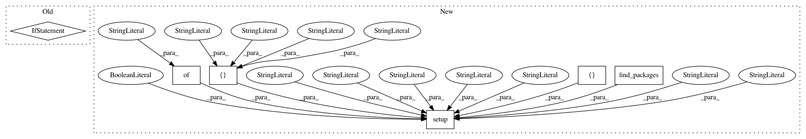

dfb5016cefc3bad21ab900a1c8196c46d6bd2297,setup.py,,,#,8
Before Change
from distutils.core import setup
if sys.argv[-1] == "publish":
os.system("python setup.py sdist upload")
sys.exit()
class PyTest(TestCommand):
def finalize_options(self):
TestCommand.finalize_options(self)
self.test_args = []
After Change
history = open("HISTORY.rst").read().replace(".. :changelog:", "")
requires = [] //during runtime
tests_require=["pytest>=2.3"] //for testing
PACKAGE_PATH = os.path.abspath(os.path.join(__file__, os.pardir))
setup(
name="tf_unet",
version="0.1.0",
description="Unet TensorFlow implementation",
long_description=readme + "\n\n" + history,
author="Joel Akeret",
url="https://github.com/jakeret/tf_unet",
packages=find_packages(PACKAGE_PATH, "test"),
package_dir={"tf_unet": "tf_unet"},
include_package_data=True,
install_requires=requires,
license="GPLv3",
zip_safe=False,
keywords="tf_unet",
classifiers=[
"Development Status :: 2 - Pre-Alpha",
"Intended Audience :: Science/Research",
"Intended Audience :: Developers",
"License :: OSI Approved :: GNU General Public License v3 or later (GPLv3+)",
"Natural Language :: English",
"Programming Language :: Python :: 2.7",
"Programming Language :: Python :: 3",
],
tests_require=tests_require,
)
In pattern: SUPERPATTERN
Frequency: 3
Non-data size: 6
Instances
Project Name: jakeret/tf_unet
Commit Name: dfb5016cefc3bad21ab900a1c8196c46d6bd2297
Time: 2017-12-29
Author: joel.akeret@gmail.com
File Name: setup.py
Class Name:
Method Name:
Project Name: GPflow/GPflow
Commit Name: 7560936f09755b3fafe03ae1c5ccebb3c93984b6
Time: 2020-05-12
Author: st--@users.noreply.github.com
File Name: setup.py
Class Name:
Method Name:
Project Name: hyperopt/hyperopt
Commit Name: e1332eabe0beddad54fa572d486310854c8a007e
Time: 2020-03-17
Author: akx@iki.fi
File Name: setup.py
Class Name:
Method Name: